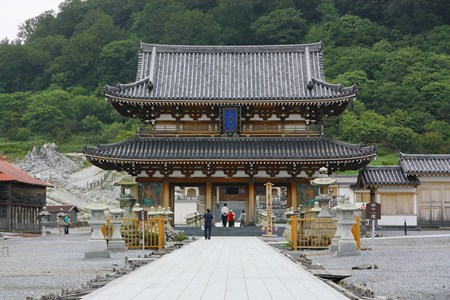
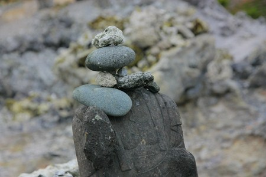
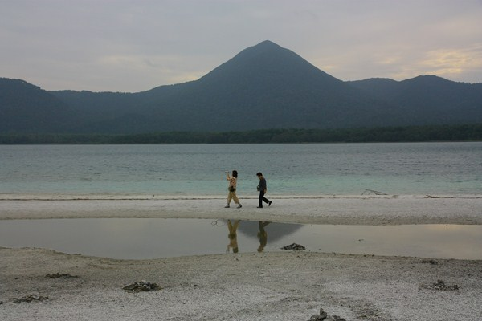
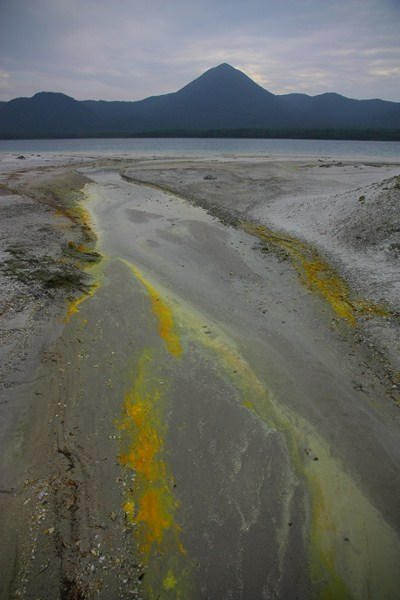

恐山/青森県
下北半島にある恐山。
いわずと知れた日本有数の死者供養の霊場である。
まだ学生だった頃、この恐山を訪れた際、独特すぎる空気、死者供養の壮絶さ、この世にあってこの世でない風景に圧倒された。
その死者供養の壮絶さ、そこで祈る人の神々しさに私は信仰する人間の中にこそ神性が宿っていると直感したのだ。
その直感を実証すべくその後長きにわたって日本中の民間信仰や死者供養の現場を訪ねることになる。いわば私にとっては珍寺道開眼の地なのである。
さて、20数年ぶりに恐山を訪れてどう思うのか、俺。
以前と同じようにただただ圧倒されまくって自分の進歩のなさを嘆くのか、それとも特に何も感動せずに自分の好奇心の衰えを嘆くのか。
ちょっと大袈裟だが、ここ恐山への再訪は私にとって一種の試金石のような気がする。
…と、まあ、個人的な思い入れはさておき、恐山である。
恐山は下北半島の中央部、宇曽利山湖畔に展開する霊場だ。
下北地方では人が死ぬと死者の魂は恐山に行く、といわれている。
荒涼とした岩の合間に供えられた風車がカラカラカラ…という光景を思い浮かべる方も多かろう。
恐山への道は果てしない。
気が遠くなるほど長い下北半島の海岸線をひたすら北上し、むつ市を過ぎ、原生林の中の一本道を抜けた先にやっと湖が見えてくる。
湖には太鼓橋が架かっている。三途の川、というわけだ。
橋の袂には脱衣婆と懸衣翁の石像が立っていた。
橋を過ぎるといよいよ恐山への入り口だ。
駐車場では合掌霊場アイスが売られている。どんなモノが気になったがこの日は寒かったのでパス。
霊場アイスと言うからには硫黄味とか、お供えして1週間経った饅頭味とか、何を食べても味がしない味とか、食べようとすると一瞬にして燃えてしまう味とかだと思う。
もちろんヨモギアイスも苦くて苦くて口の中が痺れる味に違いない（←激しい妄想、ホントはおいしいそうです）。
入り口脇には巨大な六地蔵がお出迎え。六地蔵は死にまつわる民間信仰の世界では重要なアイテムである。
ほら、伝統的なお墓の入り口には大抵あるでしょ。
入場料を払い、いざ境内へ。
恐山といえばイタコの口寄せ。
…と思われがちだが実際、恐山にはイタコさんは常駐していない。年二回の大祭の時だけ恐山にやってきて口寄せをするが、そもそも下北にはイタコはいないといわれている。
津軽や八戸からわざわざやってくるのだ。
イタコはある一定のプロセスを経て成巫する職業的巫者であり、厳密には霊能者や祈祷師とは違う。
なので間違っても「ジミヘンの霊を呼んで、歯でギター弾いてっ」などといった無謀なリクエストはしないように。
じゃあ霊能者だったら出来るのか？といえば…中には出来る人もいるかもしれないっすね。
古びた本堂の中にはあの世でのバーチャル結婚式の様子を表した婚礼人形（撮影禁止ゆえ画像はナシ）が数体あった。
婚礼人形の奉納習俗は津軽地方では多く見かけるが下北地方では珍しいのではないか。もしかしたら津軽から伝播してきたのかもしれない。
大量の角塔婆が林立している。
いかにも死者供養の霊場、といった雰囲気だ。
角塔婆には故人の戒名などが書かれているがほとんどが消えてしまっている。
そののっぺらぼうの角塔婆の群れを見ていると、無名の死者の墓標のように思えてしまう。
近くにはヒマラヤで亡くなった登山隊員の慰霊碑が。
参道脇の側溝。
黄色く見えるのは硫黄を含んだいわゆる湯の花。
この恐山には温泉が湧いており、激渋い温泉小屋が数棟ある。
参道を歩く参拝客や観光客から丸見えの湯船で硫黄臭プンプンの湯に浸かっていると、自分がたとえようもなく深い穴の底にいるような気分になる。
でもそれは決して侘びしい気分ではなくてむしろ懐かしくて落ち着いて、居心地がいいんだよね。
で、山門。
ここ恐山は正式には恐山菩提寺という曹洞宗のお寺の境内なのだ。

宿坊が高級旅館のようになっていてビックリ。
門をくぐると正面には地蔵堂、こちらが実質本堂のようだ。
交通の便が悪く、あまりハッピーな場所とも思えないが観光客は結構多い。
カップルの姿もチラホラ。君たち趣味良いねえ。もちろん人のことをどうこう言える身分ではないが。
山門や地蔵堂があるエリアの左手には荒涼とした土地が広がる。いよいよ地獄めぐりである。
硫黄が強すぎて植物が育たない、まさに「死の世界」。
そんな賽の河原に人が歩いているだけでまるであの世に向かって歩いているように見えてしまう。
納骨塔。高野山などのように死者の遺骨の一部を納めるのだろう。
荒涼とした風景に似つかわしくないスーツ姿の男性が独り山の奥へと歩を進めていた。
もちろん参拝者なのだが、場所が場所だけにあの世に旅立っていく人に見えて仕方がなかった。
この地獄めぐりのエリアは小高い丘の尾根伝いに沿って歩くようになっており、先ほど通ってきた本堂や地蔵堂のあるエリアを遠くから見下ろすことになる。
まるで臨死の疑似体験をしているように感じるのだ。
↓左手前の2棟が温泉小屋。奥の赤い屋根の大きな建物が本堂、その間に角塔婆の群れがある。
後から考えてみるとこの地獄めぐりは相当考えて演出された空間であることがわかる
俗世から丘を登ることで死の体験をし、数々の地獄を経由し、極楽にいたる、という壮大な死後の世界を追体験するためのテーマパークなのだ。
この寺を開いた慈覚大師のアイデアなのだろうか、それとも後世の人が練りに練ってルートを考えたり適所にお堂を配置したのだろうか。
いずれにせよ見流し型のエンターテインメントとしてかなり良く出来た構成になっていると言わざるを得ない。
参拝客すらも地獄を歩く亡者のような点景に仕立て上げてしまうのもそのプロデュース力の賜物だろうか。
湖の向こうにある山が印象的だった。地図を見たら大尽山とあった。
しばらく進むと見えてくる大師堂。
開祖慈覚大師の像…だと思うのだが、大量の手ぬぐいが巻き付けられていて良くわかりませんでした。
その他、わらじやお菓子、靴、ミニ地蔵などが奉納されている。
延々と続く死後の世界。
私は未だに恐山というと寺山修司の映画をワンセットで思い浮かべてしまう。
特に「田園に死す」は恐山
三つ子の魂百まで、か…マントラマントラ…
硫黄分を含んだ黄色い岩が延々と続き、まるで月面みたい。
お地蔵さんの頭も積み石。

色のない世界に数少ない彩りを添える風車。

風車、手ぬぐい、わらじ。恐山人気奉納物コンボである。

もう、俗世もだいぶ遠くなってきたなあ。
いつまでも続く彼岸の光景。
広大な場所だが、ふと足元に目をやると、ミクロのレベルでも石積みが行われていてぎょっとする。
英霊地蔵尊、と刻まれていた。
これはつまり軍装のお地蔵さん、ということなのか。右手に何かを持っていたようだ。それは杓杖だったのか、はたまた銃だったのか…。
賽の河原。
風の音以外何も聞こえない不毛の地。
荒涼とした世界の一番奥には巨大なお地蔵さんが座っていた。
周辺はシューシューと煙が吹き上がっていて硫黄の臭いがプンプンする。
水溜りもこんな感じ。
石もこんな感じ。
賽の河原八角円堂。
内部には故人の着物や服が奉納されていた。
やはり風車とか手ぬぐいのような抽象的なモノでなく故人を特定するような具体的な奉納物は見ていてグッときますね。
恐山がスペシャルな理由、それは東北地方の死者供養と日本全国に広がる賽の河原信仰とが混ざり合って一種独特な世界観を作り上げているからなのではないだろうか。
八角堂の脇のお地蔵さんの前には故人の名前が書かれた平たい石が積まれていた。
八角堂の裏手は木が生い茂っていて、これまでの荒涼とした世界と打って変わって鬱蒼としている。
そしてその木々の枝には大量の手ぬぐいが巻きつけられているではないか。
周辺には草鞋も吊り下げられていた。
サンダルも。
本州の最果ての、人外魔境のような地にこれだけ過剰な習俗が存在すること自体に改めて驚く。
血の池地獄周辺には大量のお地蔵さんが奉納されていた。
中には真っ黒に変色した観音サマも。酸性の噴煙の影響なのだろうか。
それまでの荒涼とした風景から一転して湖畔の広々とした浜に出る。
そこは極楽浜と呼ばれている。確かに押しつぶされそうな地獄めぐりから開放されたような白砂の浜は極楽のよう。

この日は曇っていたが、晴れると驚くほどのエメラルドグリーンの湖、そして真っ白な砂浜。
ココが恐山でなきゃあパラソルとデッキチェアでも持って来たいほどなのだが…。
四羽のカラスが供え物のお菓子をついばんでいた。
強い酸性の水（つまり温泉ね）が流れこんでいるのでこの湖には生き物はいないという。

何年か前に大規模な金の鉱脈がある、と話題になったこともあったっけ。
こんな場所だから生き物はいないのかと思ったらそうでもないみたい。
さて、あまり触れられていないが、もうひとつ恐山には不思議な習俗がある。
それがこれ。
表札奉納である。
亡くなった人の名前の刻まれた表札があちこちに置かれているのだ。
確かに世帯主が亡くなった場合、新しい表札に変えたら今までの表札を捨てるのも忍びない。というわけで恐山に納めにきているようなのだ。
表札にすら霊性が宿る、と考えるその思考が凄く恐山的だと思う。
一画には日本赤十字社の特別会員の表札が何個かまとめて納められていた。
恐山と赤十字、極めて異質な組み合わせとも思えるが、細かいことに頓着しない、全ての世俗の減少を飲み込む民間信仰のダイナミズムがよく現れている光景だと思う。
このような表札奉納は知らなかったが、こうして見てみると逆に何故他所にはないのかと思えるほどしっくりしている。
言ってみれば故人が現世に残した最大の証かもしれないのだから。
黄色い丘の上に家族連れ。
そこには大きなお地蔵さんが立っていた。
足元を見てビックリ。

石だけかと思ったらミニお地蔵さんも混ざっていた。しかも結構な数。
あやうく踏みつけちゃうところでした。
そんなこんなでそろそろバーチャルあの世ツアーも終盤。
勢いよく煙が吹き出している修羅王地獄。
最後は燃え尽きて真っ白に（ウソ、石灰）。
結論として、やっぱり恐山は興味深い！若い頃に受けたショックは伊達ではなかったし、そこで受けた天啓めいたもののベクトルも間違いではなかった。
20数年ぶりに来てみて、以前ほど恐れおののくこともなく、比較的冷静にここで行われている事の検証が出来た。
おかげで手ぬぐい奉納や表札奉納などの珍しい習俗、そして婚礼人形などの習俗も確認できた。
2011年バージョンの俺、とりあえず青二才の頃よりは冷静かつ積極的に恐山の魅力を堪能できた。
一応、年相応に正常進化してるということで、いいすか？
2011.09.
珍寺大道場 HOME